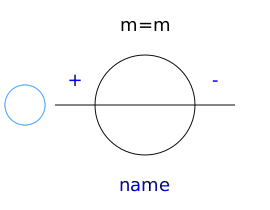
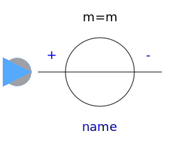
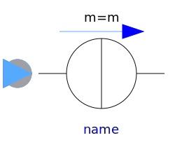

This package hosts sources for quasi stationary multiphase circuits. Quasi stationary theory can be found in the references.
| Name | Description |
|---|---|
|  VoltageSource | Constant multiphase AC voltage |
|  VariableVoltageSource | Variable multiphase AC voltage |
|
|
Constant multiphase AC current |
|  VariableCurrentSource | Variable multiphase AC current |